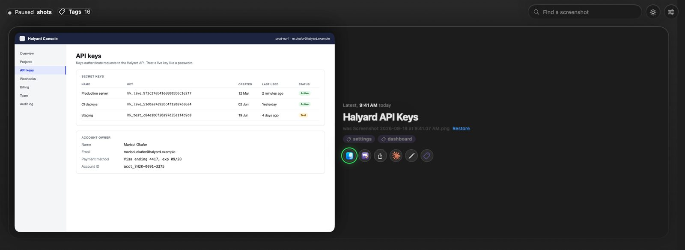
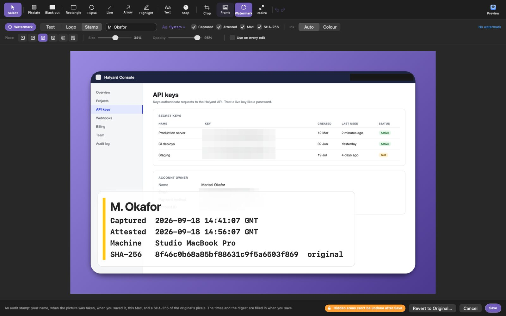
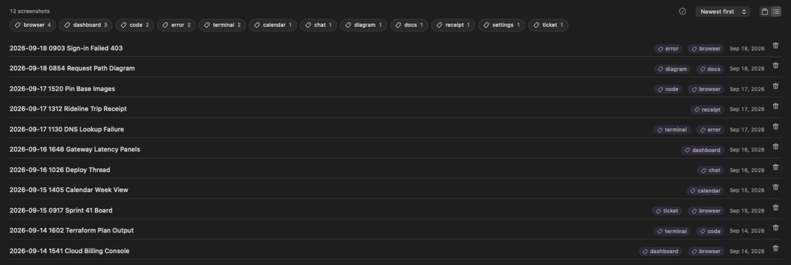

Every screenshot, named.
The moment it lands, by the AI you already use. And it stays a file in your folder.
- Screenshot 2026-09-18 at 9.41.07 AM.png2026-09-18 0941 Halyard API Keys.pngsettingsdashboardPNG image
- Screenshot 2026-09-18 at 9.03.19 AM.png2026-09-18 0903 Sign-in Failed 403.pngerrorbrowserPNG image
- Screenshot 2026-09-17 at 3.20.44 PM.png2026-09-17 1520 Pin Base Images.pngcodebrowserPNG image
- Screenshot 2026-09-17 at 11.30.52 AM.png2026-09-17 1130 DNS Lookup Failure.pngterminalerrorPNG image
- Screen Recording 2026-09-16 at 10.26.44 AM.mov2026-09-16 1026 Deploy Thread.movchatQuickTime movie
- Screenshot 2026-09-14 at 3.41.07 PM.png2026-09-14 1541 Cloud Billing Console.pngdashboardbrowserPNG image

The real app, with demo data. Every name comes with a way back.
Four steps. Three of them never leave your Mac.
Watch
New captures are picked up from your macOS screenshot folder. Screen recordings too.
Read
Apple's on-device Vision OCR pulls the text out. The picture itself goes nowhere.
Title
The text goes to the titler you picked, for two or three words back.
File
Renamed from a template you control, tagged from a list you control, indexed for search.
Built for people who take dozens of screenshots a week.
macOS names every capture after the second it was taken. A month later you remember a billing console. The filename remembers 3.41.07 PM.
Named as it lands
Only macOS default capture names (Screenshot …, Screen Recording …) are touched, in any language.
Your AI, your login
It drives the assistant you are already signed in to: Claude Code, Codex, Gemini CLI, Cursor, or Ollama on this Mac.
Filed with Finder tags
Up to two per capture from a fixed list you control. A screenshot never gets to invent a tag of its own.
Search what it said
shotscribe find "NXDOMAIN" searches the text on the screenshot. A three-word title is a thin hook a month later.
Tools for your assistant
An MCP server with four tools, a /screenshot skill for Claude Code, and "Rebuild as code" for turning a capture into a diff.
Scored titles
shotscribe eval re-titles the captures you already kept. A prompt change gets a number instead of a feeling.
Running in a minute.
- 1
Download the DMG
From the latest release. Developer ID signed, notarized and stapled, so macOS opens it without a warning.
- 2
Drag it to Applications
It lives in the menu bar. If your captures land on the Desktop, macOS asks once for folder access.
- 3
Take a screenshot
Press ⌘⇧4 as you always do. Auto-rename is on from the first launch; the switch is on the Rename tab.
# what would it call this one? renames nothing $ shotscribe label "~/Desktop/Screenshot 2026-09-18 at 9.41.07 AM.png" Halyard API Keys tags: settings, dashboard # watch the folder macOS saves to $ shotscribe watch shotscribe: watching ~/Pictures/Screenshots (Ctrl-C to stop) # search what your screenshots said $ shotscribe find "NXDOMAIN" # give your assistant the same engine $ claude mcp add shotscribe -- /path/to/shotscribe-mcp
Redact it before it leaves your Mac.
Its own editor, for the things people do to a screenshot before sharing it.

Pixelate or black out
Keys, e-mails, account numbers. Text under it can't be read back.
Frame it
A margin, a shadow, and a gradient or a picture behind it.
Sign it
An audit stamp: your name, capture time, save time, the Mac, and a SHA-256 of the original pixels that an auditor can check.
Mark it up
Arrows that bend, step numbers, highlights, crop, resize. Edits stay editable.
Hidden areas can't be undone after Save
The app's own warning. It means it.
Yours.
ShotScribe ships no API keys and has no account of its own. You pick who titles a capture, and the app, the CLI and the watcher all honour the same choice.
| Titler | What it drives | Where the text goes | On whose terms |
|---|---|---|---|
| Claude Codedefault | claude CLI, tools disabled | Anthropic, on your subscription | your login |
| Codex | codex exec, read-only sandbox | OpenAI, on your login | your login |
| Gemini CLI | gemini -p, sandboxed | Google, on your login | your login |
| Cursor Agent | cursor-agent -p | Cursor, on your login | your login |
| Ollama | ollama run <model> | Nowhere. The model runs on this Mac. | on this Mac |
| An endpoint | any OpenAI-compatible /chat/completions | The endpoint you name; a local one keeps it here | you decide |
| Other CLI | llm, aichat, mods, a team script | Wherever it sends it | you decide |
| Offline | the keyword titler | Nowhere. | on this Mac |
Every preset ships with the flags that stop the tool from acting on the text, because what is on your screen is not always text you wrote.
A small tool with a sharp edge: it renames files.
So here is all of it before you install. Removing it takes five lines, and renamed files keep their names.
Only default names
Anything you or another tool named is left alone, unless you pass --force.
Never overwrites
If a name is taken it adds (2), then (3). The app keeps the original name, and Restore puts it back.
One local index
~/.shotscribe/index.json, readable by your user only. Treat it like the screenshots it describes.
Notarized, not sandboxed
Signed under a Developer ID and notarized by Apple. No telemetry; the only network code is the endpoint titler, and only if you choose it.

Make your screenshot folder readable.
Drag ShotScribe to Applications and take your next capture.
Apple silicon and Intel, macOS 13 or later · free and open source